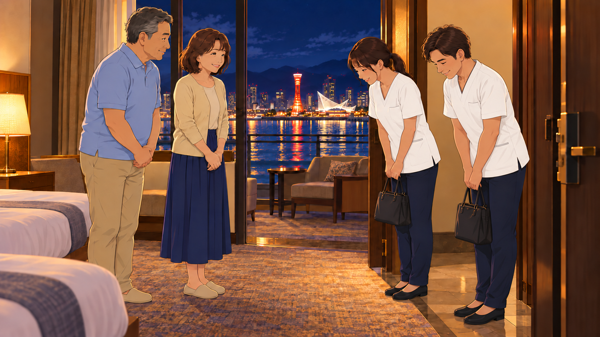
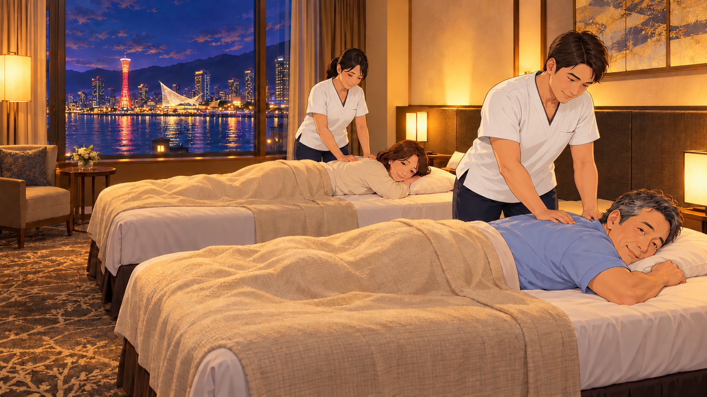

神戸、ふたり旅。
ご採用いただいたA案を、公式サイトのサービス内容に沿って75秒に拡充。旅先の疲れから、国家資格・手技・お客様に寄り添う対応を伝え、ホテルでくつろぐ時間へつなぎます。
伝わる強み：利用する場面がすぐに伝わる
動画と絵コンテを見る2026年10月19日のご回答を反映。
採用いただいたA案を75秒へ拡充。男女スタッフの制服を白に統一し、公式サイトの「提携ホテル先でのサービス」「太洋堂について」を反映しました。
75秒・14カット ／ 全カット画像＋画像上テロップ ／ 音声・BGMなし
画の下に、動作・構図・セリフ・音の案・つながりの注意点を掲載しています。
ご採用いただいたA案を、公式サイトのサービス内容に沿って75秒に拡充。旅先の疲れから、国家資格・手技・お客様に寄り添う対応を伝え、ホテルでくつろぐ時間へつなぎます。
伝わる強み：利用する場面がすぐに伝わる
動画と絵コンテを見る更新内容：A案のみ掲載。スタッフは男女1名ずつ・白い制服。国家資格・手技・お客様に寄り添う対応の3カットを追加しました。本編62秒＋求人6秒＋問い合わせ7秒。今回のシーン番号はA01〜A14です。
ご採用いただいたA案を、公式サイトのサービス内容に沿って75秒に拡充。旅先の疲れから、国家資格・手技・お客様に寄り添う対応を伝え、ホテルでくつろぐ時間へつなぎます。

妻「やっぱり、来てよかったね」

夫「さすがに、膝にきたなあ」／妻「私も、腰がね」

妻「お部屋でマッサージをお願いできますか？」

NA「ご宿泊の提携ホテル。そのお部屋へ伺います」

スタッフ「こんばんは。太洋堂です」

NA「施術は、国家資格を持つあん摩マッサージ指圧師が担当」

NA「静かに過ごしたい方も。お一人おひとりのご希望に寄り添います」

NA「機械やオイルを使わず、手から伝わる温もりを大切に」

NA「太洋堂の訪問マッサージ。お部屋で、ゆっくりおくつろぎください」

妻「寝ちゃった。お金、払っておくね」

妻「昨日、お願いしてよかったね」／夫「ゆっくり休めたな」

NA「旅の時間を、最後まで」

NA「業務委託の、あん摩マッサージ指圧師も募集中です」

NA「治癒院、太洋堂。詳しくは、公式ホームページへ」
訪問・施術・会計・求人シーンの制服を白に統一しました。男女1名ずつのスタッフが訪問します。ご主人は男性スタッフ、奥様は女性スタッフが担当します。会計は女性スタッフが対応します。


公式サイトから反映：提携ホテル先でのサービスと太洋堂についての説明をもとに、国家資格・手技のみの施術・ご希望に寄り添う対応を追加しました。ご利用は提携ホテルにご宿泊のお客様が対象で、ご予約はホテルのフロントへご相談いただく流れです。
屋号・連絡先：「治癒院 太洋堂」は公式サイトの表記と一致しています。A案の電話番号は打ち合わせ内容を継承しています。公式サイトでは営業時間を「提携ホテル先に準ずる」としているため、A14の固定時間表示を外しました。
夫婦同時施術：打ち合わせの希望を反映した描写です。実際の訪問可否・対応ホテル・スタッフ2名の手配状況は予約時に確認する前提です。
翌朝の描写：笑顔やよく休めた感想で変化を見せます。症状の治癒・改善を約束するコピーは入れていません。施術はマッサージのみです。
音声：今回のMP4は字幕付き・無音です。絵コンテ内の音の記述は本制作向けの設計案です。静止画は動作の代表瞬間で、細かな動きは本文に記載しています。
公式HP・QR：A14に公式ホームページのURLとQRコードを追加しました。